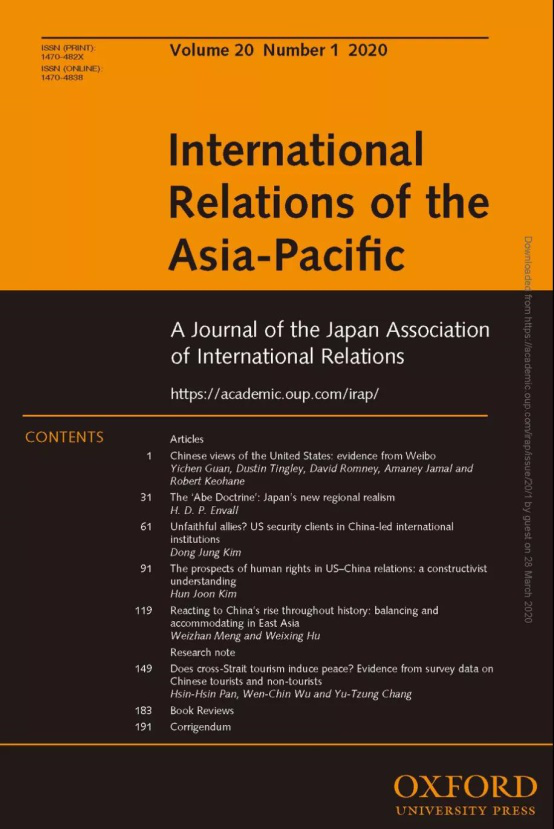
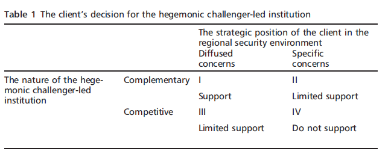
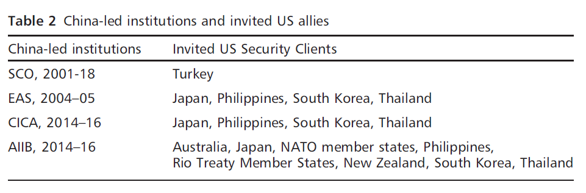
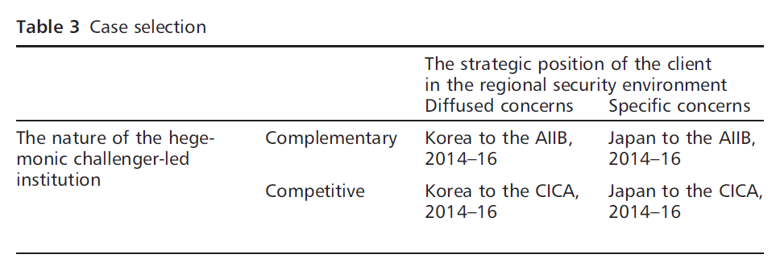

收录于合集

作品简介
【作者】 Kim Dong Jung，耶鲁-新加坡国立大学学院（Yale-NUS College）助理教授。
【编译】 张曼娜（国政学人编译员，吉林大学公共外交学院）
【校对】 李源
【审核】 刘瑛琛
【排版】 王国伟
【来源】
Dong Jung Kim, Unfaithful allies? US security clients in China-led international institutions, International Relations of the Asia-Pacific, Volume 20, Issue 1, January 2020, Pages 61–90, https://doi.org/10.1093/irap/lcy015

期刊简介

International Relations of Asia-Pacific ，《亚太国际关系》，成立于2001年，由牛津大学出版社代表日本国际关系协会出版，每年1月、5月和9月出版共三次。该期刊主要关注亚太地区的国际政治动态，包括中国国内政治、美国在亚太地区的地位、地区治理、日本对外关系、亚洲与国际关系理论、中国的全球化道路以及中国的国家认同等。根据2018 Journal Citation Reports显示，其影响因子为1.233。
不忠的盟友？中国领导的国际制度中的美国安全扈从国
Unfaithful allies? US security clients in China-led international institutions
Kim Dong Jung
编者按
本文预设中国是美国霸权秩序的挑战者，但实际上学界对于中国是否主动挑战美国，并试图削弱或推翻美国领导的国际秩序仍然存在争议，具体可参见：Buzan, B. (2010). China in International Society: Is “Peaceful Rise” Possible? The Chinese Journal of International Politics, 3(1), 5–36. doi:10.1093/cjip/pop014 ; G. John Ikenberry (2014). From Hegemony to the Balance of Power: The Rise of China and American Grand Strategy in East Asia. International Journal of Korean Unification Studies 23(2), 41-63.; 格雷厄姆·艾利森著，陈定定等译：《注定一战：中美能避免修昔底德陷阱吗？》，上海人民出版社2019年版。文中观点亦不代表本平台立场。
文章导读
二战后，美国建立了高度制度化的国际秩序。在加强经济与安全制度设计的同时，美国也通过为扈从国提供安全承诺，有意维持一个多层次的联盟体系，换取其对美国领导的国际秩序的积极参与。然而近年来美国的几个盟友对中国领导的国际制度的积极参与，直接挑战了这一联盟体系。
霸权挑战国领导怎样的制度会受到美国安全扈从国的支持呢？又有哪些美国安全扈从国会支持呢？国际制度建设一直是霸权竞争的重要组成部分，特别是在后冷战时代，赢得国际合法性对于获得领导地位至关重要。因此，美国安全扈从国积极参与霸权挑战国主张的制度，不仅会损害美国领导的国际秩序的制度基础，还可能导致安全扈从国与美国之间的信任破裂。
本文认为，要理解美国安全扈从国对霸权挑战国所倡议的国际制度的支持，有两个因素至关重要： (1) 挑战国所领导的制度的性质，(2) 扈从国在地区安全环境中的战略地位 。当挑战国领导的制度是旨在对美国领导的制度框架进行补充而不是与之竞争时，面临分散的安全关切的扈从国更有可能对其进行支持。相比之下，当挑战国领导的制度旨在与以美国领导的制度进行竞争时，受到挑战国所带来的明确安全关切的扈从国则不会对其进行支持。
01
观点的提出
（一） 理解安全扈从国对挑战国领导的制度的回应
美国安全扈从国在华盛顿对其挑战国领导的国际制度的核心属性持保留态度的情况下，会做出怎样的选择，这一问题还未引起现有研究的重视。首先，有些学者认为国家安全高于一切，小国应当采取与其保护国战略利益相一致的政策，而美国也有足够的能力影响其扈从国。其次，许多学者关注了美国及其盟友在其领导的国际制度内部的争端，但主要关注的是美国领导的机构内部的发展。一些研究在探讨霸权竞争者利用多边机构与领导国竞争时，并没有为美国盟友支持霸权挑战国领导的国际制度的决定提供合理的理论依据。另外一部分学者仅仅将研究停留在具体的案例分析上。
作者接下来指出，“霸权挑战国所造成的安全威胁的大小决定了扈从国对其领导的国际制度支持与否”这一观点具有误导性。本文基于扈从国与霸权挑战国之间存在显著的合作空间这一假设，并且作者认为，军事对抗不一定会阻碍相互竞争的国家间建立经济联系。
本文对扈从国关于由霸权挑战国领导的政府间制度的行为进行了阐释。当扈从国选择支持时，意味着它完全接受霸权挑战国提出的议程与组织原则；当扈从国明确拒绝签署相关协议时，即不支持该制度；当扈从国只接受部分议程与组织原则，并对该制度的重要属性有所保留时，其提供的支持是有限的。
本文的关键假设包含以下三点：第一， 霸权国与霸权挑战国必须存在 。即本文认为，中国在2010年后便已经有挑战美国国际体系领导地位的巨大潜力，并正积极领导一个代表其利益的新的国际制度的形成。第二，由于得到美国的军事支持，扈从国在考虑加入挑战国领导的制度时，一定会战略性地考虑美国利益。最后，本文假设挑战国并未对扈从国构成迫在眉睫的军事威胁。
（二） 挑战国领导的制度的性质
霸权挑战国领导怎样的制度会受到美国安全扈从国的支持呢？作者认为， 霸权挑战国领导的制度的性质决定了安全扈从国对支持行为收益的净评估，进而影响其决策 。
并非所有霸权挑战国领导的制度都会动摇美国的领导地位。霸权挑战国在试图撼动美国秩序的制度基础时，可以提出两种类型的国际制度：竞争性的与补充性的。莫尔斯（Edward L. Morse）与基欧汉（Robert O. Keohane）认为，竞争性制度旨在取代现有的“游戏规则”。此外，竞争性制度往往包含与现存制度相左的规则和做法，并且可能要求其参与国在某些重要的政治经济议题上集体与霸权国对立，即霸权国很可能被排除在外。
反之， 补充性制度追求改变现有国际秩序中的领导角色，而不损害秩序本身的制度基础 。支持这类制度的霸权挑战国承认美国领导的现有自由制度的中心地位，而注重在现有制度没有充分涉及的问题领域或地区提供公共产品，甚至进一步巩固自由化。通过补充性制度，挑战国或许能够将自己定位为比当前领导国更积极、更合法、更公正的现有自由国际秩序的倡导者。
根据前文的逻辑，扈从国在竞争性制度参与中获得的收益可能会与成本和风险相抵消，那么它们就可能限制自身对竞争性制度的参与；而在美国一再表示欢迎尊重现有自由国际秩序的强大国家崛起的情况下，针对补充性制度，扈从国能够做出稳赚不赔的可靠预期，那么最终的决定就可能是积极参与。
（三）扈从国在区域安全环境中的战略地位
什么样的扈从国可能会支持霸权挑战国领导的制度呢？本文认为， 扈从国对挑战国的战略关切深刻影响了其对挑战国领导的制度的立场 。在美国领导的联盟中，保护国试图保持其在“全球公域”的领导地位，而扈从国由于缺乏充足的利益和资源，其主要安全目标仅限于在其所处区域的安全环境内提升其战略利益。
在与霸权挑战国的关系中，扈从国会面临两种安全关切：分散的与明确的。首先，当挑战国只给主导国的长期安全利益，而非扈从国保护其直接安全的能力带来威胁时，扈从国可能只会面临分散的安全关切。即使挑战国采取了侵略性的军事行动，保护国与扈从国的战略评估也会明显不同，如冷战期间，美国认为1979年苏联入侵阿富汗是一场针对西方集团的进攻，而英德等美国主要盟国则认为这只是一次偶然事件。
其次，扈从国也会面临来自挑战国明确的、直接的战略关切。即使扈从国没有面临来自挑战国迫在眉睫的战争威胁，但并不意味着扈从国不关心挑战国在其周边的行动，扈从国可能正遭遇来自挑战国或明或暗的军事压力。另外，扈从国可能认为，随着挑战国实力的增长，挑战国在与它们的双边关系中会越来越独断。在这种情况下，扈从国会面临来自霸权挑战国的“明确”安全关切。
综上，当扈从国只面临来自挑战国分散的战略关切时，一般不会拒绝霸权挑战国领导的制度；而在面临来自挑战国明确的安全关切时，扈从国通常与保护国具有一致的安全考量，避免对挑战国领导的制度表示支持。
（四）理论主张

如表1所示， 首先，当扈从国只面临挑战国分散的安全关切时，会选择支持挑战国的补充性制度 （单元格I）。补充性意味着扈从国能够通过参与该制度获得巨大的实际收益，而没有明确的安全关切意味着扈从国不必畏惧挑战国。 其次，当扈从国面临明确的安全关切时，它们会对挑战国领导的补充性制度表示有限的支持 （单元格II）。明确的安全关切意味着扈从国有避免与挑战者合作的动机。然而补充性制度的性质使得扈从国会选择通过有限的支持来进行妥协。 第三，当扈从国只面临来自挑战者分散的安全关切时，将会对挑战者领导的竞争性制度提供有限支持 （单元格III）。逻辑同上，扈从国会在分散的安全关切与竞争性制度的巨大成本与风险之间妥协，从而对挑战国提供有限支持。 第四，当扈从国面临来自挑战国明确的安全关切时，将不会支持挑战国领导的竞争性制度 （单元格IV）。竞争性制度带来的有限收益与明确的安全关切自然会使扈从国对其避而远之。
02
案例分析
为了证实上述观点，本文对美国的安全扈从国如何回应中国所领导的制度进行了案例研究。作者主要关注，在中国被视为霸权的挑战国，并开始在同美国盟国的互动中主张各种新的国际制度后，它所领导的国际制度的演进。

如表2所示，21世纪以来，中国领导了上海合作组织（SCO）、东亚峰会（EAS）、亚信会议（CICA）与亚投行（AIIB）等四个国际制度的形成发展。在表2所示的时期内，美国不仅避免了与这些制度的实质接触，并且表达了对这些制度核心属性的不满。上合组织并未实质性将手伸向美国主要安全扈从国，而至2005年底，中国很快丧失了在东亚峰会中的主动权，故本文主要关注亚信会议与亚投行。另外，本文主要关注与美国有着正式军事关系的保持“集体防务安排”（collective defense arrangements）的盟友。
本文论证的变量操作如下。首先， 因变量是扈从国对挑战国领导的制度的支持，由扈从国对公开宣布的议程、组织原则或规则的反应来衡量 。选择支持意味着扈从国完全接受该制度的议程制定、组织原则或规则；明确拒绝以上方面则意味着不支持；扈从国认可部分议程、组织原则或规则，但拒绝承认该制度的所有重要属性时，则意味着有限支持。
其次，当挑战国领导的制度规则和实践基础受到美国领导的制度的明确反对，且不允许领导国以正式成员身份加入该制度时，这一制度就是竞争性的，反之则是补充性的。
最后，当扈从国面临挑战国部署在其领土附近的军事力量的公开压力，要求其采取或避免某些军事行动时，或两国爆发领土争端时，代表着扈从国面临着明确的安全关切。如果以上情况没有发生，本文认为扈从国面临的只是分散的安全关切。

如表3所示，2014年至2016年间日本和韩国对亚信会议和亚投行的回应可以很好地解释本文的四个理论场景，同时可以对两个相似案例进行有组织、有重点的比较。除此之外，日韩两国在中美竞争中的角色以及由此产生的政策影响也十分重要。因此，虽然对两国的研究可能会削弱论证的一般性，但却具有更强的政策相关性。
同时，作者对关于将亚信会议（安全制度）与亚投行（经济制度）进行比较的合理性的质疑做出了回应，指出对本文理论的理想检验便是对不同领域的关注，并且只有亚信会议与亚投行明显符合本文的关键范围条件。
03
中国领导下的亚信会议，2014—2016
2014年，中国担任亚信会议主席国，该多边安全制度于1999年成立，2006年成为正式的国际组织。亚信会议最初旨在通过仿效欧洲安全与合作组织（Organization for Security and Cooperation in Europe ，OSCE）的体制框架，解决西亚和中亚的安全问题。日本和韩国于2006年分别成为了亚信会议的观察员国和成员国，当时该组织的未来尚不明朗。然而，随着中国开始行使领导权，将亚信会议宣传为一个有效的亚洲多边安全组织，并不断提高其战略地位，争议随之而来。而日韩两国作为美国在东亚的核心盟友，发现自己处于一个尴尬的境地。
（一）亚信会议的中国倡议实质：竞争性
作者认为，2014年以来，在中国的领导下，亚信会议开始展现出竞争性制度的特质。 首先，中国表示有意将亚信会议作为亚洲新安全关系的制度基础，这可能会取代美国的同盟体系。 中国关于亚洲在安全问题方面自主权的主张实际上意味着美国这样的域外大国不应发挥重大作用。尽管亚信会议原则上中立，但在中国领导下，该制度可以通过替代美国联盟体系改变现状。
第二 ，中国领导下恢复的亚信会议核心原则与冷战后美国倡导的国际准则存在冲突。 亚信会议的一些关于主权平等和不干涉国家内政的重要基本原则实际上表达了对西方国家，特别是美国，利用军事力量强行推进民主化的强烈反对。而亚信会议这些得到中国支持的强调国家主权的准则可能成为非自由民主国家治理国际关系的有力选择。
第三，尽管中国强调亚信会议最重要的议题是恐怖主义、分裂主义和极端主义，但其在采取行动时并未与美国密切协调。 作者认为，通过强调“亚洲人的亚洲安全”（‘Asian security by Asians’），中国旨在增强亚信会议成员国在不依赖美国支持的情况下应对恐怖主义的集体能力。
除此之外，当把中国的提议放在大背景下考虑时，中国主导的亚信会议的竞争性就变得明显起来。随着美国宣布“重返亚洲”（‘pivot to Asia’）后不断加强其在西太平洋的联盟体系，对亚信会议的支持可以被看做是中国为了平衡美国的东亚政策而做出的努力。
（二）日韩对中国的安全关切
尽管2014年至2016年间，中国并未对日韩构成迫在眉睫的军事威胁，但两国都承认中国将基于其日益增长的实质影响力追求新的安全利益，美国表示，将不会对此坐视不理。在中美战略竞争加剧的同时，日本和韩国面临着与中国不同的安全关切。
作者认为，日本遭遇了来自中国的严重且明确的安全关切。从地缘政治的角度来说，日本是中国在东亚天然的竞争对手。中国宣布的“东海防空识别区”（‘East China Sea Air Defense Identification Zone ，ADIZ’）直接否定了日本对两国争议海域的主权主张。
相比之下，韩国在2014年至2016年间只面临来自中国分散的安全关切。在这期间，韩国坚信中国是朝鲜半岛稳定的关键所在，并迫切希望获得中国领导人的支持。此外，在东海防空识别区和“萨德”（Terminal High Altitude Area Defense ，THAAD）部署问题上，中韩两国都在努力避免摩擦。许多人认为，中韩之间的一系列峰会说明两国已经建立了历史上前所未有的友好关系。
（三） 日韩对中国倡议的回应
作者认为，日本与韩国对中国不同的安全关切导致了两国对中国领导的国际制度的不同回应。
日本并不支持中国将亚信会议转变为地区安全制度。日本人大多认为亚信会议实质上是中国对奥巴马政府“亚洲再平衡”（‘rebalance to Asia’）战略的回应，一旦建立起来，该制度将会把美国赶出西太平洋地区。因此，日本拒绝向中国领导的亚信会议提供支持，只是继续保持其观察员国地位。
相比之下，韩国对中国领导的亚信会议提供了有限的支持。作者认为，韩国严重依赖美国的军事支持，并且在亚信会议中也不会获得多大的实质利益。然而由于并没有面临来自中国明确的安全关切，并且希望在朝鲜问题上赢得中国的支持，韩国对中国牵头的亚信会议表示了有限支持。
04
亚投行，2014—2016
自成立以来，亚投行一直被视为中国改变围绕国际货币基金组织(IMF)和世界银行(World Bank)建立的国际金融治理结构的代表。美国对亚投行的治理标准、中国的决策比重都表达了不满，并敦促盟国不要加入亚投行。
由于亚投行的筹备与成立也在2014-2016这一时间段，日本和韩国在亚投行成立时的安全关切与亚信会议时并无二致。但是作者认为，亚投行属于补充性制度，在这一背景下，由于面临来自中国的安全关切不同，日韩对中国亚投行倡议的回应也各异。
（一 ）亚投行的中国倡议实质：补充性
作者认为，尽管无法预测亚投行未来的实质是否变化，但至少在2014年至2016年，中国领导的亚投行的实质更接近于一个补充性制度，在寻求提升中国领导地位的同时，维护了现有国际经济秩序。理由如下：
首先，亚投行实际上填补了现有国际制度未能考虑到的巨大投资缺口 。 2009年，亚洲开发银行（Asian Development Bank，ADB）估计，到2020年，亚洲将需要多达8万亿美元的基础设施投资。发展中的亚洲作为全球经济发展引擎，外部资金投入不足不仅会减缓亚洲国家的经济增长，也会影响世界经济。在世界银行和亚洲开发银行都束手无策，美国也不愿意对布雷顿森林体系进行改革的情况下，亚投行填补了国际投资的空白，对美国领导的国际制度进行了补充。
其次，至少在 2014年至 20 16 年间，亚投行的原则和规则在几个关键方面符合国际标准。 自亚投行倡议启动以来，面对美国对透明度和责任制的质疑，中国采用了可能限制自身影响力的治理标准，并表示愿意与国际货币基金组织共同制定亚投行的原则和规则，以证明亚投行与现有国际制度的合作性，确保潜在成员的持续支持。
第三，亚投行奉行开放的成员国身份。 政治属性、经济取向或地理取向都不被视为成员国身份条件。因此其成员国数量迅速增长，包括英、法、德在内的西方主要国家也成为亚投行的创始成员国。中国还多次暗示，亚投行的成员国资格对美国开放。
（二）日韩对中国倡议的回应
对日本来说，亚投行提出了一个外交政策难题。尽管日本承认亚投行在拉动亚洲经济增长上的潜力，但同时也面临着亚信会议时同样明确的安全关切。此外，中日两国在区域经济一体化方面的竞争也加剧了这一关切。
在这种情况下，日本并没有采取明确行动，而是表现出观望态度，其态度可以看作一种有限支持，如表1单元格 II 所示。虽然日本已经选择不作为创始成员国加入亚投行，并与中国在区域制度建设上展开竞争，但是日本在亚投行上的立场与在亚信会议上的反对态度截然不同。日本承认亚投行的重要属性与现有国际制度的一致性，并且没有表现出严重的敌意。相反，据报道，日本和中国官员进行了幕后会谈，而日本领导的亚开行（Asian Development Bank，ADB）也承诺与亚投行在业务上开展密切合作。
与日本不同，韩国主要从中国的亚投行倡议中看到了巨大的经济收益，而没有对中国产生严重的明确安全关切。只要亚投行能够致力于填补亚洲国家在基础设施建设方面的供应缺口，韩国就能从中受益。尽管有人担心加入亚投行会背离美国领导的制衡中国的新兴联盟，但韩国通过访问华盛顿等形式希望美国能够正确理解亚投行。因此，韩国作为亚投行的创始成员国，积极支持中国这一新倡议。
05
结论
本文为解释美国安全扈从国对反映霸权挑战国利益的国际制度的支持提供了一种观点，并得到了案例支撑。
本文观点的理论意义在于没有囿于大多数国际关系学者对于保护国与扈从国的军事依赖关系的看法，而指出：扈从国可能会出于对挑战国的不同看法，采取与保护国利益不一致的政策。此外，本文对探讨国际制度的类型以及分析崛起国、领导国以及扈从国之间的互动也有所裨益。
本文也为中美两国的决策者提供了政策借鉴。 对美国来说 ， 只要霸权竞争意味着不同治理方式的竞争 ， 美国就需要继续确保其领导地位 ， 但是美国不能理所当然地将盟国作为反击中国挑战的工具 。 此外，在应对中国所领导的制度时，美国获得其盟国支持的前提是它们认可美国的对华战略利益。因此，美国应当积极填补现有制度的漏洞，扩大现有制度的地域或政策范围，增加对其主要盟国的军事投资，加强盟国忠诚度。
反之， 中国可以通过运用补充性而非竞争性制度扩大其在不同领域内的影响力。通过关注现有国际制度安排中的空白，对于那些主要国际制度中的边缘国家，中国将能够成为合法且良性的公共产品提供者。 同时，中国也需要避免可能给美国盟友带来明确安全关切的言论与不必要的政策措施。结合以上两点，中国便能顺利在崛起过程中避免与美国的直接对抗。
本文由国政学人独家编译推荐，文章观点不代表本平台观点，转载请联系授权。


好好学习，天天“在看”